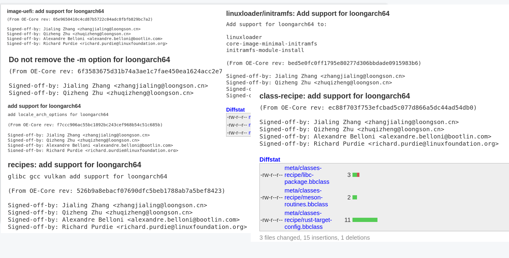

<!DOCTYPE html>
<html lang="en">
  <head>
    <meta charset="utf-8" />
    <meta name="viewport" content="width=device-width, initial-scale=1.0, maximum-scale=1.0, user-scalable=no" />

    <title>2023年度总结</title>
    <link rel="shortcut icon" href="./favicon.ico" />
    <link rel="stylesheet" href="./dist/reset.css" />
    <link rel="stylesheet" href="./dist/reveal.css" />
    <link rel="stylesheet" href="./dist/theme/simple.css" id="theme" />
    <link rel="stylesheet" href="./css/highlight/github.css" />

    <link rel="stylesheet" href="./_assets/custom.css" />

  </head>
  <body>
    <div class="reveal">
      <div class="slides"><section  data-markdown><script type="text/template">

<div class="middle center">
<div style="width: 100%">

#  2023年度总结
<hr/>

By [[朱奇正](https://github.com/baibaidashixiong)]

<div style="text-align: right; margin-top: 1em;">
<p>2024.1.9&emsp;&emsp;&emsp;</p>
</div>
</div>
</div>
</script></section><section  data-markdown><script type="text/template">

<div class="middle center">
<div style="width: 100%">

# 目录 
<hr/>
1. Yocto上游推进(1~6月)<br>
2. 天基云项目(7~10月)<br>
3. 安卓移植(11月~现在)<br>

</div>
</div>

</script></section><section ><section data-markdown><script type="text/template">

<div class="middle center">
<div style="width: 100%">

# Part.1 
<hr/>
Yocto上游推进

</div>
</div>

</script></section><section data-markdown><script type="text/template">

##   __Yocto上游推进

> 将Yocto对la架构的支持推入OpenEmbedded上游
<hr/>
<div style="text-align: center;">

</div>

</script></section><section data-markdown><script type="text/template">

##   __Yocto上游推进

> 为meta-webkit，meta-clang添加la架构的支持
<hr/>
<div class="mul-cols">
<div class="col">
<div style="text-align: center;">

</div>
</div>
    <div class="col">
<div style="text-align: center;">

</div>

</script></section><section data-markdown><script type="text/template">

##   __Yocto上游推进

> 为meta-loongarch添加对iso/chromium/qtwebengine的支持
<hr/>
<div style="text-align: center;">

</div>

</script></section></section><section ><section data-markdown><script type="text/template">

<div class="middle center">
<div style="width: 100%">

# Part.2 
<hr/>
天基云项目


</div>
</div>

</script></section><section data-markdown><script type="text/template">

## __天基云项目


- 搭建openstack/proxmox云平台
> 在龙芯机器上，用一台3C5000与两台3A5000作为物理资源节点搭建一个云平台原型系统.
- 为opentack实现动态资源调度
> opentack自带静态资源调度功能，即在创建虚拟机时候会进行节点调度选择，需要为其在运行过程中添加动态调度功能. 

</script></section><section data-markdown><script type="text/template">
## __天基云项目

> 搭建openstack/proxmox云平台
<div style="text-align: center;">

</div>
</script></section><section data-markdown><script type="text/template">
## __天基云项目

> openstack调度
<div style="text-align: center;">
    <video width="600" height="400" controls>
  <source src="openstack-scheduler-demo.mp4" type="video/mp4">
</video>
</div>
</script></section></section><section ><section data-markdown><script type="text/template">

<div class="middle center">
<div style="width: 100%">

# Part.3 
<hr/>
安卓移植


</div>
</div>


</script></section><section data-markdown><script type="text/template">

## __安卓移植
<br><br>
> Emulator的编译

<div style="text-align: center;">

</div>

</script></section><section data-markdown><script type="text/template">

## __安卓移植

> ART中JIT的移植(进行中)

<div style="text-align: center;">

</div>

</script></section><section data-markdown><script type="text/template">

## __安卓移植

> ART中JIT的移植(进行中)
<br>
> ART包含安卓运行时和一个虚拟机，将java/kotlin转换为dex中间码，然后再将中间码转换为目标架构指令运行。

- 主要工作内容
<br>
> 为ART添加一个loongarch架构的后端
- 难点
<br>
> 类似JVM，但是JVM是基于栈的虚拟机，而ART是基于寄存器的虚拟机，在实现上更为复杂。
<br>
> 类似为LLVM添加一个后端，但是LLVM的耦合性更低，文档和教程更丰富。
<br>
> 调试难度较大

</script></section></section><section  data-markdown><script type="text/template">

<div class="middle center">
<div style="width: 100%">

# 谢谢！
<hr>

</div>
</div>

</script></section></div>
    </div>

    <script src="./dist/reveal.js"></script>

    <script src="./plugin/markdown/markdown.js"></script>
    <script src="./plugin/highlight/highlight.js"></script>
    <script src="./plugin/zoom/zoom.js"></script>
    <script src="./plugin/notes/notes.js"></script>
    <script src="./plugin/math/math.js"></script>
    <script>
      function extend() {
        var target = {};
        for (var i = 0; i < arguments.length; i++) {
          var source = arguments[i];
          for (var key in source) {
            if (source.hasOwnProperty(key)) {
              target[key] = source[key];
            }
          }
        }
        return target;
      }

      // default options to init reveal.js
      var defaultOptions = {
        controls: true,
        progress: true,
        history: true,
        center: true,
        transition: 'default', // none/fade/slide/convex/concave/zoom
        slideNumber: true,
        plugins: [
          RevealMarkdown,
          RevealHighlight,
          RevealZoom,
          RevealNotes,
          RevealMath
        ]
      };

      // options from URL query string
      var queryOptions = Reveal().getQueryHash() || {};

      var options = extend(defaultOptions, {"transition":"slide","transitionSpeed":"fast","center":false,"slideNumber":"c/t","width":1000}, queryOptions);
    </script>

    <script src="./_assets/heti.js"></script>
    <script src="./_assets/heti_worker.js"></script>

    <script>
      Reveal.initialize(options);
    </script>
  </body>
</html>
